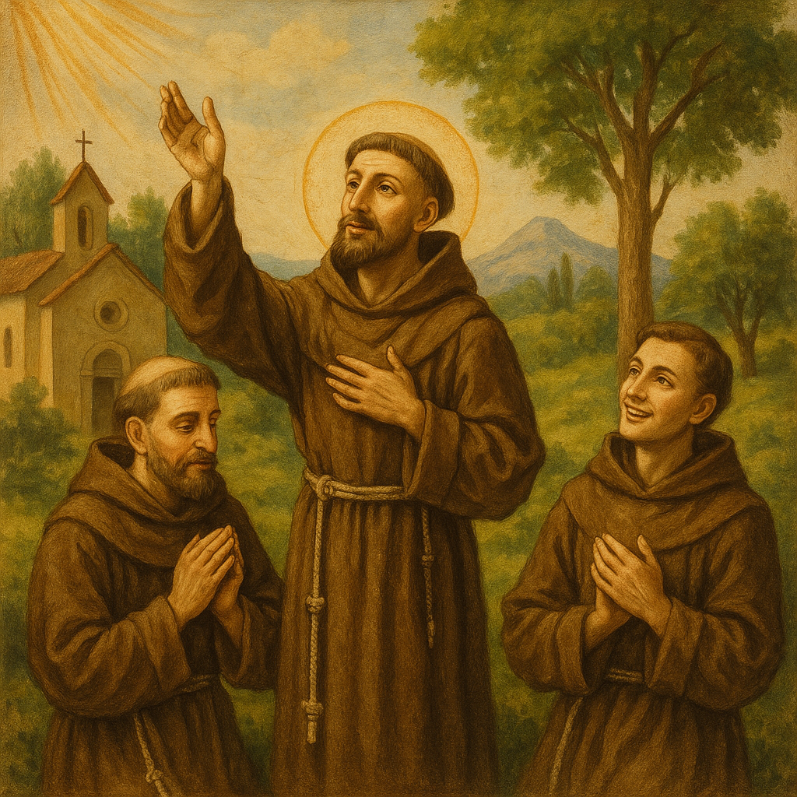
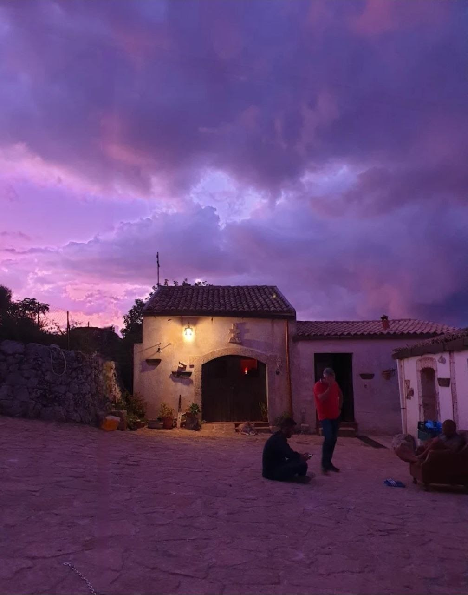
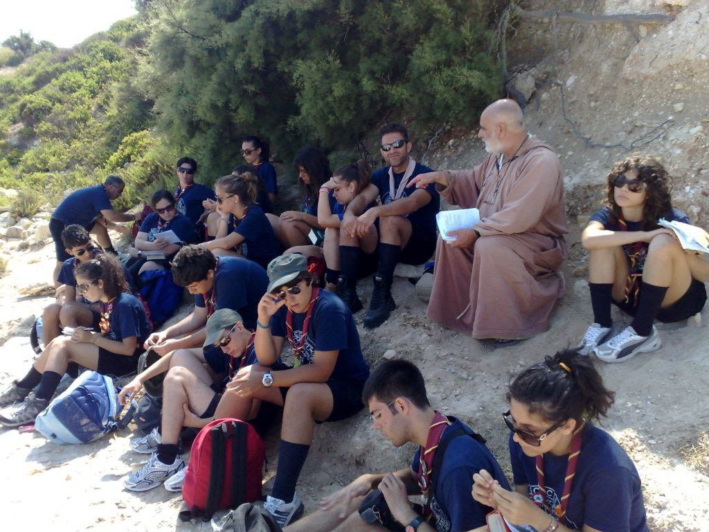
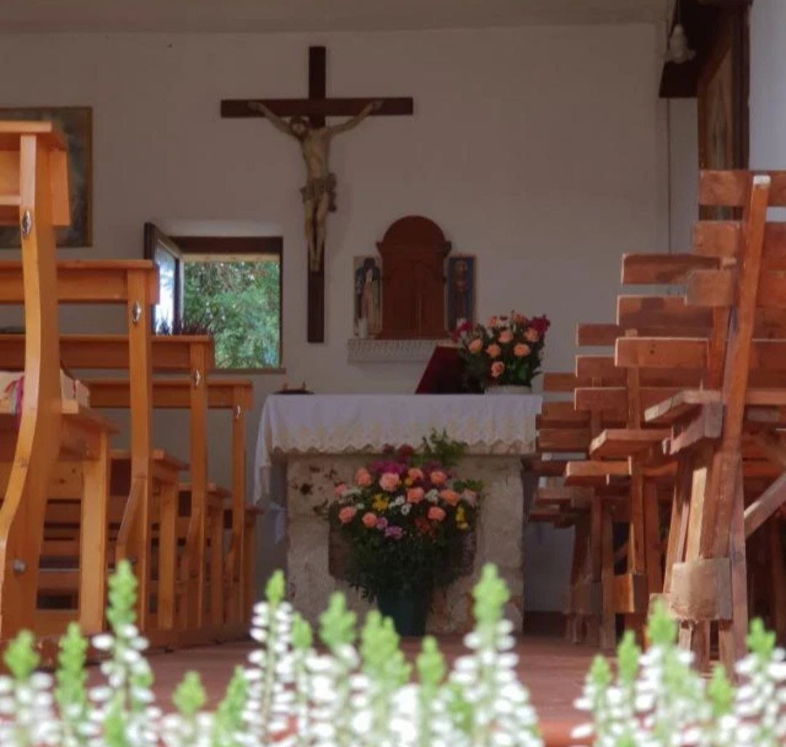
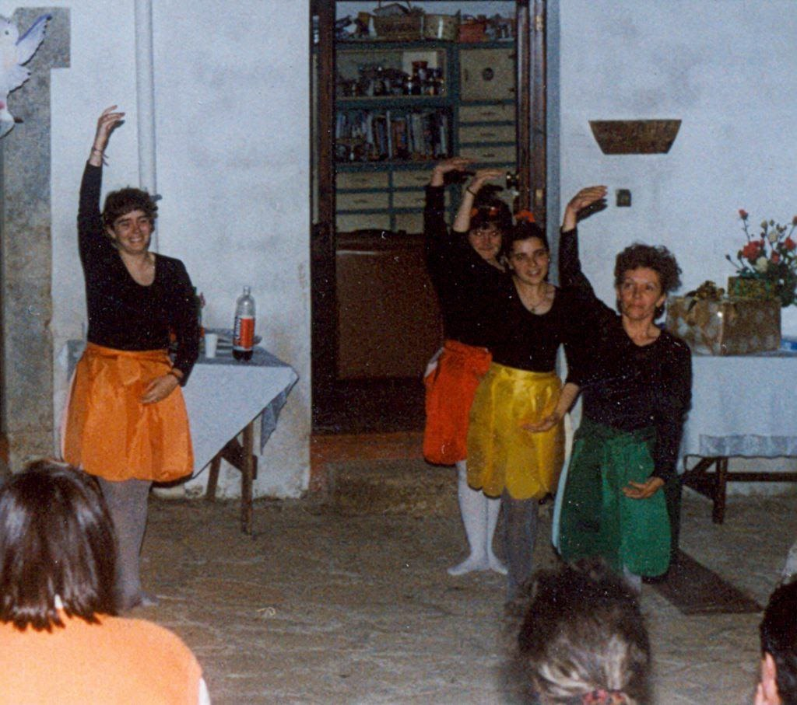
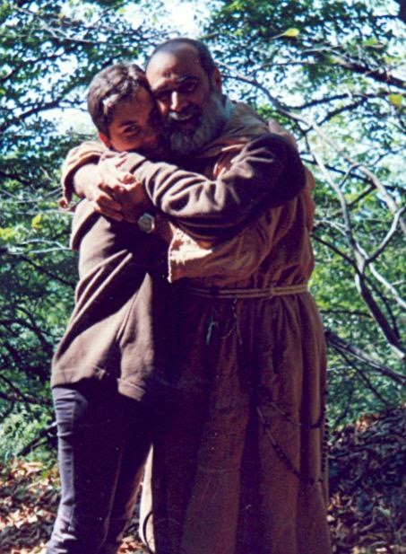
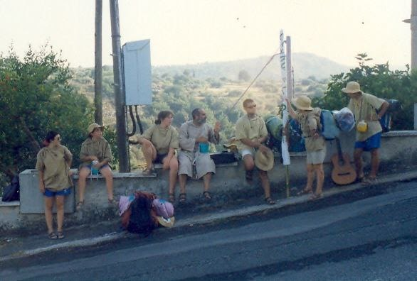
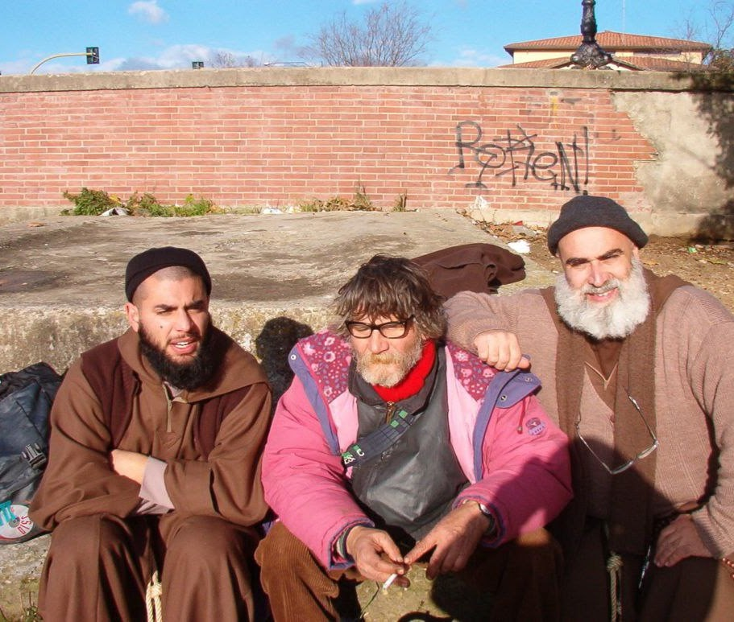

Il carisma

La Fraternità Santa Maria degli Angeli si costituisce con lo scopo di servire Dio nella Chiesa, secondo gli insegnamenti del santo Vangelo e la spiritualità di Francesco e Chiara di Assisi, con una tensione particolare alla Regola scritta da San Francesco per i “romitori”, alla sua vita vissuta in povertà e minorità, nella preghiera, nella carità verso tutti gli uomini, nella libertà dei figli di Dio, nella gioia della fraternità, nell’annuncio che Dio ci ama, ci ama tutti di un amore infinito e ci ha salvati in Cristo Gesù.
“La Regola e la vita dei fratelli sia questa: seguire la dottrina e l’esempio del Signore nostro Gesù Cristo il quale dice: <<se qualcuno vuol venire dietro a me rinneghi se stesso, prenda ogni giorno la sua croce e mi segua>> e <<chi avrà lasciato il padre e la madre, i fratelli e le sorelle, la moglie e i figli, la casa e i campi per amor mio, riceverà il centuplo e possederà la vita eterna>>” (San Francesco di Assisi)
La Fraternità, ad imitazione della Santa Madre Chiesa e nel rispetto delle sue leggi si apre ad accogliere chiunque voglia impegnarsi sinceramente a vivere un’esperienza religiosa di fede e di carità nella dimensione di “piccola chiesa”. Nessuna condizione di vita, nessuno stato, nessuna età escludono di per sé da questa vocazione divina; chiunque, uomo o donna, vergine o sposato, desideroso di servire Dio secondo gli insegnamenti del Vangelo e la spiritualità propria della Fraternità, può essere accolto, ferme restando le condizioni per l’accettazione più avanti specificate.
La Fraternità, volendo fare suo il carisma evangelico che chiama ogni uomo alla santità e accoglie ogni creatura che si converte all’amore di Dio, si compone di tre stati di vita diversi e complementari, come rami dello stesso albero: i “religiosi”, gli “oblati”, e i “secolari”.
L'EREMO ˅
I fratelli e le sorelle della Fraternità amano l'Eremo come luogo privilegiato del silenzio, dell'ascolto intimo della Parola di Dio e dell'incontro con il Signore.
Sull'esempio di Francesco che spesso si ritirava nelle carceri e nei romitori per immergersi nella contemplazione amorosa, la Fraternità custodisce l'esperienza eremitica come sorgente inesauribile da cui scaturisce ogni azione apostolica. Senza la sosta orante all'eremo, la missione perderebbe il suo vigore spirituale e la sua autenticità.

I POVERI ED ESCLUSI ˅
Seguendo il Redentore che si è fatto povero per arricchirci con la Sua povertà, i membri della Fraternità scelgono di stare accanto a coloro che il mondo dimentica o rifiuta.
Nei poveri, nei malati, nei carcerati e in quanti vivono ai margini, la Fraternità riconosce la carne stessa di Cristo crocifisso e risorto. Il servizio verso di loro non è semplice filantropia, ma condivisione fraterna, rispetto profondo per la dignità di ciascuno e annuncio della speranza evangelica.

NELLA STRADA ˅
La nostra vita religiosa prende il via e trova il suo senso e la sua ragione di esistere proprio nell'esercizio del ministero cristiano lungo la strada... nella strada... e per la strada.
La Fraternità si fa pellegrina tra la gente, facendosi compagna di viaggio di quanti cercano senso, conforto e fede, portando il sorriso e la pace di Cristo negli incroci della quotidianità.

NELLA CHIESA ˅
La comunione filiale con i Pastori della Chiesa e l'obbedienza sincera al Romano Pontefice e ai Vescovi diocesani sono il fondamento incrollabile del nostro cammino.
Inseriti pienamente nel tessuto ecclesiale, collaboriamo attivamente con le diocesi di Noto, Piazza Armerina e Catania per l'edificazione del Corpo di Cristo.

I TRE RAMI DELLA FRATERNITÀ

I Religiosi
Fratelli e sorelle che professano i consigli evangelici di povertà, castità e obbedienza vivendo in comune secondo le Costituzioni della Fraternità.

Gli Oblati
Persone che si consacrano a Dio offrendo la propria vita nel mondo, rimanendo nel proprio stato di vita ma uniti spiritualmente alla Fraternità.

I Secolari
Laici, famiglie e giovani che condividono la spiritualità francescana nella vita quotidiana, nel lavoro e nella testimonianza sociale.